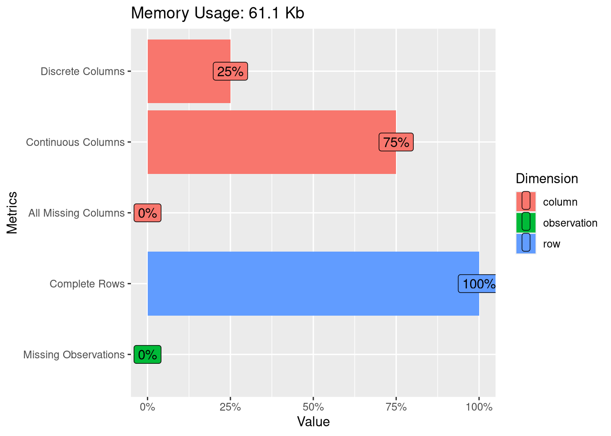
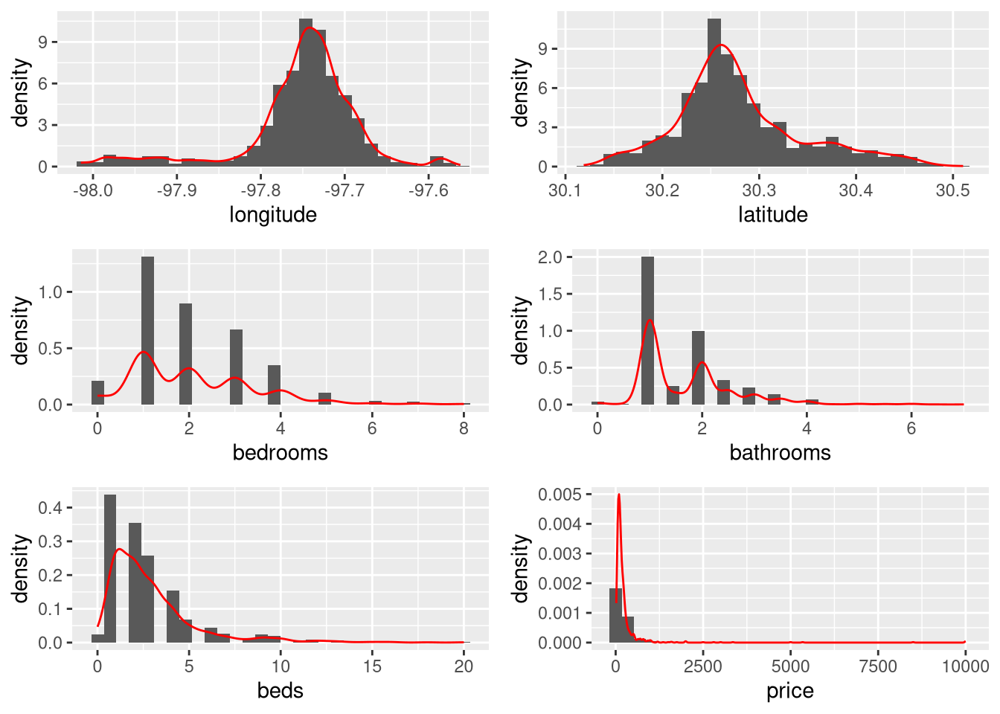
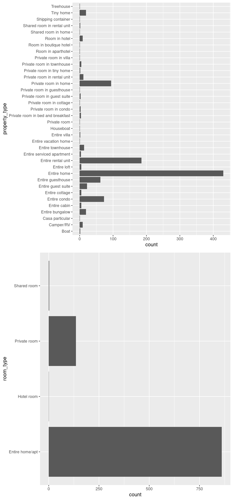
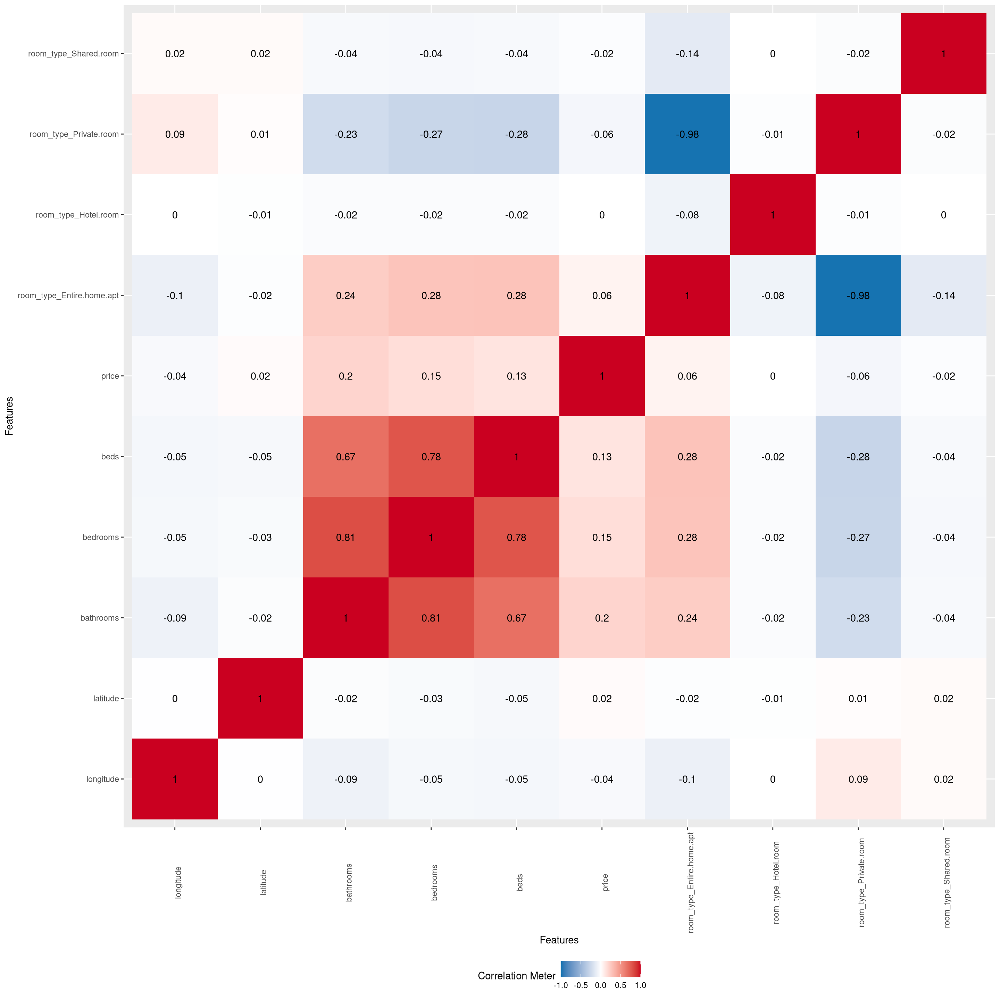
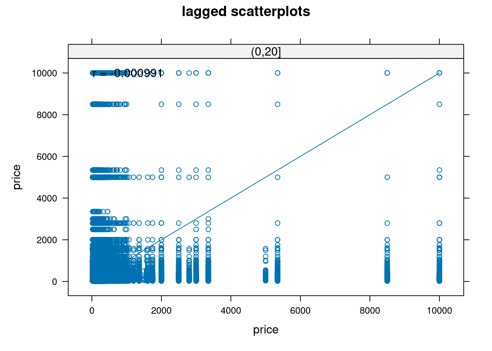
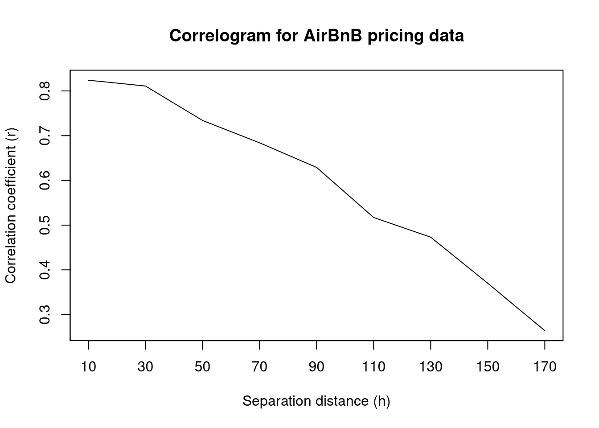
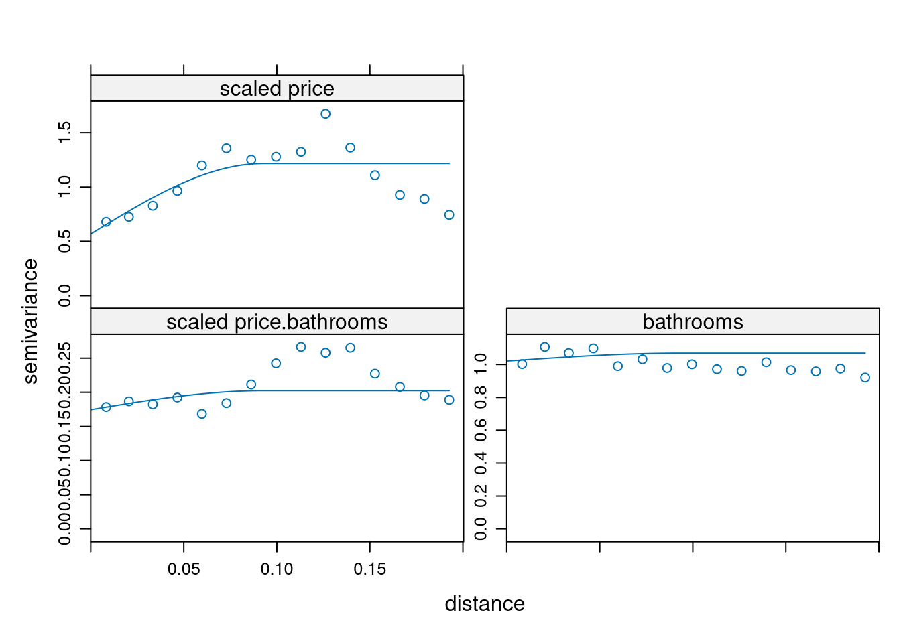
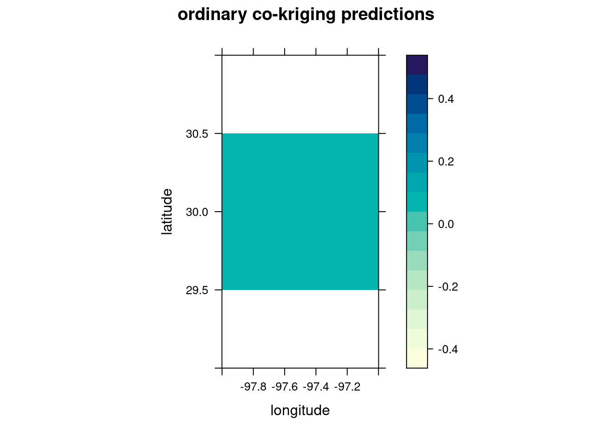
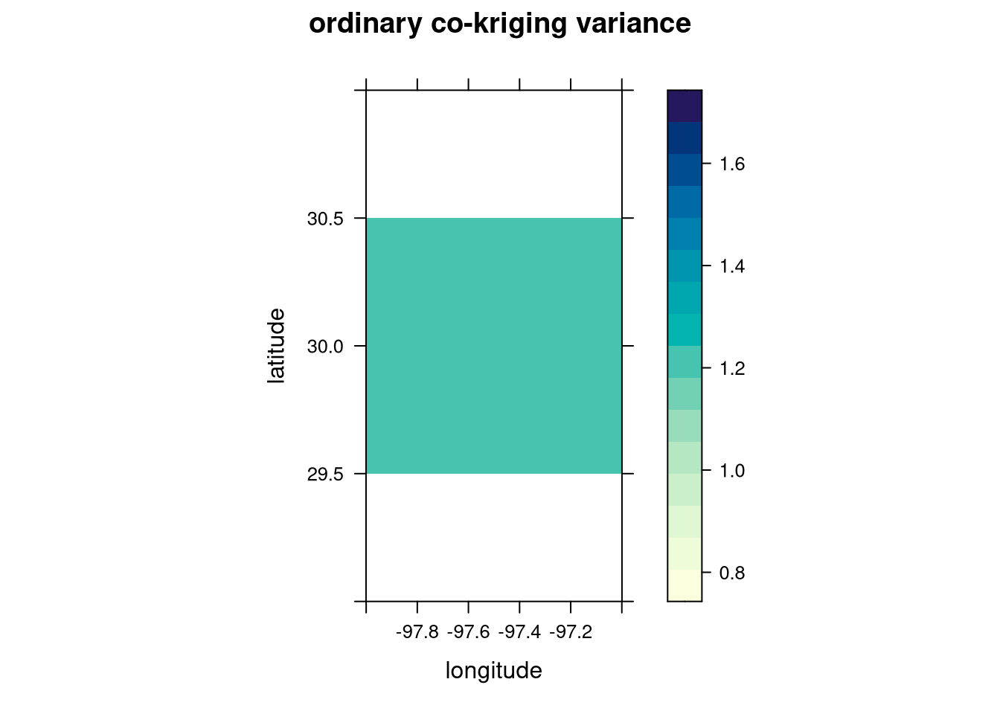

library(doParallel)Loading required package: foreachLoading required package: iteratorsLoading required package: parallelncores <- detectCores()
clus <- makeCluster(ncores - 1)
registerDoParallel(clus)Applying my coursework from STATS C173/C283
Naren Prakash
April 6, 2025
Predicting the price of Airbnb listings is a pretty standard project for most people in the stats / data science / ML space. I mean, the data is fairly comprehensive and large and is easily publicly accessible. So what makes this project any different?
I wanted to try looking at this pretty standard problem through a completely different lens. After taking STATS C173/283 at UCLA (one class btw it’s just cross-listed so the designation is odd) I learned about kriging and spatial prediction and testing techniques. Specifically, accounting for spatial autocorrelation in a variable for predicting new values of the same value.
Generally, this is applied to more natural phenomena, like weather events, that are easily designated as geostatistical events. However, I thought it would make sense to consider Airbnb listing themselves a form of geostatistical data. After all, prices vary by neighborhood and location is a prime determinant of listing price. With that in mind, I decided to see for myself if this was a valid way of price prediction.
Note: All the data used in this report is from the 14 December 2024 report of Airbnb data from https://insideairbnb.com/get-the-data/.
Before I began my actual code, I wanted to set up my R environment to make it a bit more efficient.
Loading required package: foreachLoading required package: iteratorsLoading required package: parallelI then loaded in the libraries I planned to use for this project.
── Attaching core tidyverse packages ──────────────────────── tidyverse 2.0.0 ──
✔ dplyr 1.1.4 ✔ readr 2.1.5
✔ forcats 1.0.0 ✔ stringr 1.5.1
✔ ggplot2 3.5.1 ✔ tibble 3.2.1
✔ lubridate 1.9.4 ✔ tidyr 1.3.1
✔ purrr 1.0.4
── Conflicts ────────────────────────────────────────── tidyverse_conflicts() ──
✖ purrr::accumulate() masks foreach::accumulate()
✖ dplyr::filter() masks stats::filter()
✖ dplyr::lag() masks stats::lag()
✖ purrr::when() masks foreach::when()
ℹ Use the conflicted package (<http://conflicted.r-lib.org/>) to force all conflicts to become errors
Attaching package: 'maps'
The following object is masked from 'package:purrr':
map--------------------------------------------------------------
Analysis of Geostatistical Data
For an Introduction to geoR go to http://www.leg.ufpr.br/geoR
geoR version 1.9-4 (built on 2024-02-14) is now loaded
--------------------------------------------------------------Linking to GEOS 3.12.2, GDAL 3.9.3, PROJ 9.4.1; sf_use_s2() is TRUE
Attaching package: 'gridExtra'
The following object is masked from 'package:dplyr':
combine
Attaching package: 'kableExtra'
The following object is masked from 'package:dplyr':
group_rowsBefore I started working with the data set, I had to do some modification. I selected the predictors I wanted to consider and made sure that no two listings had the same combination of latitude and longitude. I then dropped any observations with NA values and randomly sampled 1000 observations to create the final data set. After this, I created factors for the appropriate values and fixed some issues via manual inspection.
set.seed(0)
austin_listings <- austin_listings_orig %>%
select(c(longitude, latitude, property_type, room_type, bathrooms, bedrooms, beds, price)) %>%
distinct(longitude, latitude, .keep_all = TRUE) %>%
drop_na() %>%
sample_n(1000) %>%
mutate_if(is.character, as.factor)
austin_listings$price <- as.numeric(gsub("[^0-9\\.]", "", austin_listings$price))Before delving into the analysis, I wanted to do some exploratory data analysis of our finalized dataset.

| longitude | latitude | property_type | room_type | bathrooms | bedrooms | beds | price | |
|---|---|---|---|---|---|---|---|---|
| Min. :-98.01 | Min. :30.12 | Entire home :430 | Entire home/apt:861 | Min. :0.000 | Min. :0.000 | Min. : 0.000 | Min. : 18.0 | |
| 1st Qu.:-97.77 | 1st Qu.:30.24 | Entire rental unit :185 | Hotel room : 1 | 1st Qu.:1.000 | 1st Qu.:1.000 | 1st Qu.: 1.000 | 1st Qu.: 84.0 | |
| Median :-97.74 | Median :30.27 | Private room in home: 94 | Private room :135 | Median :1.500 | Median :2.000 | Median : 2.000 | Median : 133.0 | |
| Mean :-97.75 | Mean :30.28 | Entire condo : 73 | Shared room : 3 | Mean :1.698 | Mean :2.079 | Mean : 2.897 | Mean : 256.9 | |
| 3rd Qu.:-97.72 | 3rd Qu.:30.31 | Entire guesthouse : 62 | NA | 3rd Qu.:2.000 | 3rd Qu.:3.000 | 3rd Qu.: 4.000 | 3rd Qu.: 225.0 | |
| Max. :-97.56 | Max. :30.51 | Entire guest suite : 22 | NA | Max. :7.000 | Max. :8.000 | Max. :20.000 | Max. :10000.0 | |
| NA | NA | (Other) :134 | NA | NA | NA | NA | NA |
long_hist <- austin_listings %>% ggplot(aes(x = longitude)) +
geom_histogram(aes(y = ..density..)) +
geom_density(col = "red")
lat_hist <- austin_listings %>% ggplot(aes(x = latitude)) +
geom_histogram(aes(y = ..density..)) +
geom_density(col = "red")
bed_hist <- austin_listings %>% ggplot(aes(x = bedrooms)) +
geom_histogram(aes(y = ..density..)) +
geom_density(col = "red")
bath_hist <- austin_listings %>% ggplot(aes(x = bathrooms)) +
geom_histogram(aes(y = ..density..)) +
geom_density(col = "red")
beds_hist <- austin_listings %>% ggplot(aes(x = beds)) +
geom_histogram(aes(y = ..density..)) +
geom_density(col = "red")
price_hist <- austin_listings %>% ggplot(aes(x = price)) +
geom_histogram(aes(y = ..density..)) +
geom_density(col = "red")
grid.arrange(long_hist, lat_hist, bed_hist, bath_hist, beds_hist, price_hist, nrow = 3)
We can see that most of the numeric variables have very skewed distributions.
bar_prop <- austin_listings %>% ggplot(aes(x = property_type)) +
geom_bar() +
coord_flip()
bar_room <- austin_listings %>% ggplot(aes(x = room_type)) +
geom_bar() +
coord_flip()
grid.arrange(bar_prop, bar_room)
The property type graph shows a clear majority of listings are entire homes or rental units, which is unsurprising given Airbnb marketing. A notable thing I noticed here was that there were listings that were rooms in hotels, which seemed contradictory to the whole concept of Airbnb.
1 features with more than 20 categories ignored!
property_type: 36 categories
We can see some noticeable correlation among many of the predictors, with the private room type and the entire home apartment room type having the strongest correlation.
Now that we’ve gotten an understanding of what our data looks like, we proceed to the non-spatial analysis component.
Loading required package: Matrix
Attaching package: 'Matrix'The following objects are masked from 'package:tidyr':
expand, pack, unpackLoaded glmnet 4.1-8set.seed(0)
pred <- austin_listings %>% select(-price)
X <- data.matrix(pred)
y <- austin_listings$price
cv.model <- cv.glmnet(X, y, alpha = 1)
lam <- cv.model$lambda.min
best_mod <- glmnet(X, y, alpha = 1, lambda = lam)
coef(best_mod)8 x 1 sparse Matrix of class "dgCMatrix"
s0
(Intercept) 46.0619
longitude .
latitude .
property_type .
room_type .
bathrooms 124.2221
bedrooms .
beds . Based on the LASSO method of variable selection, only the variable bathrooms is a significant predictor for the price of a individual listing. However, knowing there is another variable with relation to price helps us decide the specific kriging method for the best price prediction model.
With that, we move on to geospatial analysis.
library(sp)
library(gstat)
sp_listings <- austin_listings
coordinates(sp_listings) <- ~ longitude + latitude
qq <- hscat(price ~ 1, sp_listings, c(0, 20, 40, 60, 80, 100, 120, 140, 160, 180))
plot(qq, main = "h-scatterplots")
plot(c(10, 30, 50, 70, 90, 110, 130, 150, 170), c(0.824, 0.811, 0.734, 0.684, 0.629, 0.517, 0.473, 0.37, 0.264), type = "l", xlab = "Separation distance (h)", ylab = "Correlation coefficient (r)", main = "Correlogram for AirBnB pricing data", xaxt = "n", yaxt = "n")
axis(1, at = seq(10, 240, by = 20), labels = seq(10, 240, by = 20))
axis(2, at = seq(0, 1, by = 0.1), labels = seq(0, 1, by = 0.1))
Both the h-scatterplots and the correlogram indicate that there seems to be spatial correlation between points. This is especially noticeable in the correlogram as we can visualize a clear negative trend in correlation coefficient as the separation distance increases. This seems to justify our spatial correlation approach.
Scaling is done here to make variogram creation easier later on.
We use Cressie’s weights as a compromise between the techniques of ordinary least squares and generalized least squares. This way we can reduce computation but also account for covariance structures.
The two selected covariance functions are the exponential and spherical covariance functions,
Visually it is hard to choose the best covariance function. Instead, we will minimize PRESS (predicted residual error sum of squares). Through cross-validation, we’ll select a covariance function for our model.
cvalid <- krige(id = "scaledprice", scale(price) ~ 1, locations = ~ longitude + latitude, model = exp_fit, data = train, newdata = test)[using ordinary kriging] V1
Min. :-2.88004
1st Qu.:-0.20605
Median :-0.10193
Mean : 0.01401
3rd Qu.: 0.03235
Max. :13.60095 [1] 314.8996cvalid <- krige(id = "scaledprice", scale(price) ~ 1, locations = ~ longitude + latitude, model = sph_fit, data = train, newdata = test)[using ordinary kriging] V1
Min. :-1.941282
1st Qu.:-0.220706
Median :-0.125659
Mean : 0.005639
3rd Qu.: 0.000283
Max. :13.555199 [1] 304.6792We see here that the spherical covariance model minimizes PRESS so we continue onward with this covariance function.
We know there is one related variable, bathrooms, that has the most correlation with price. Let’s investigate whether cokriging with this predictor would be the best approach to price prediction.
Adding the covariate and looking at the variogram plots:
all <- gstat(g, id = "bathrooms", formula = scale(bathrooms) ~ 1, locations = ~ longitude + latitude, data = austin_listings)
var_all <- variogram(all)
all_fit <- fit.lmc(var_all, all, model = sph_fit)
plot(var_all, all_fit)
Linear Model of Coregionalization found. Good.
[using ordinary cokriging]Warning in checkNames(value): attempt to set invalid names: this may lead to
problems later on. See ?make.names var1.pred var1.var observed residual zscore fold longitude latitude
1 0.157460703 NA -0.1568927 -0.31435337 NA 1 -97.74668 30.27257
2 0.004633452 NA 0.2780841 0.27345065 NA 2 -97.72470 30.25387
3 -0.010727639 NA -0.2721183 -0.26139066 NA 3 -97.72851 30.24386
4 -0.105715907 NA -0.1266459 -0.02093003 NA 4 -97.74562 30.25795
5 -0.053681854 NA -0.1684152 -0.11473337 NA 5 -97.74712 30.27016
6 0.015238444 NA 0.2838454 0.26860694 NA 6 -97.72518 30.25520 longitude latitude scaled price.pred scaled price.var bathrooms.pred
1 -98.000 30 0.03859578 1.242966 0.086515
2 -97.999 30 0.03859578 1.242966 0.086515
3 -97.998 30 0.03859578 1.242966 0.086515
4 -97.997 30 0.03859578 1.242966 0.086515
5 -97.996 30 0.03859578 1.242966 0.086515
6 -97.995 30 0.03859578 1.242966 0.086515
bathrooms.var cov.scaled price.bathrooms
1 1.073499 0.2039032
2 1.073499 0.2039032
3 1.073499 0.2039032
4 1.073499 0.2039032
5 1.073499 0.2039032
6 1.073499 0.2039032library(lattice)
levelplot(ck$`scaled price.pred` ~ longitude + latitude, ck,
aspect = "iso",
main = "ordinary co-kriging predictions"
)
levelplot(ck$`scaled price.var` ~ longitude + latitude, ck,
aspect = "iso",
main = "ordinary co-kriging variance"
)
We can see lots of uniformity between the co-kriging predictions and variance. Is it better than ordinary kriging?
In this case, it looks like ordinary kriging is better as the cokriging results are too uniform and don’t accurately capture the variation in pricing amongst Austin listings. Therefore, our final model is the spherical covariance model with ordinary kriging.
It should be noted that for the purposes of actual price prediction, the inputs of this model must be scaled which means that the resulting predictions have to be un-scaled to the original units.